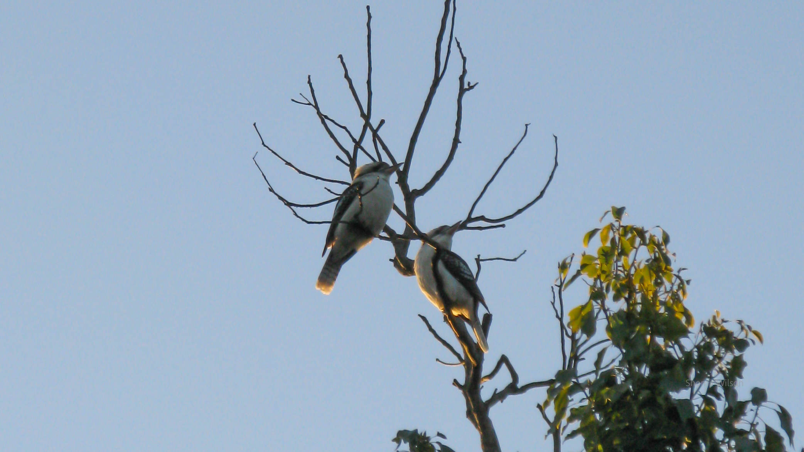
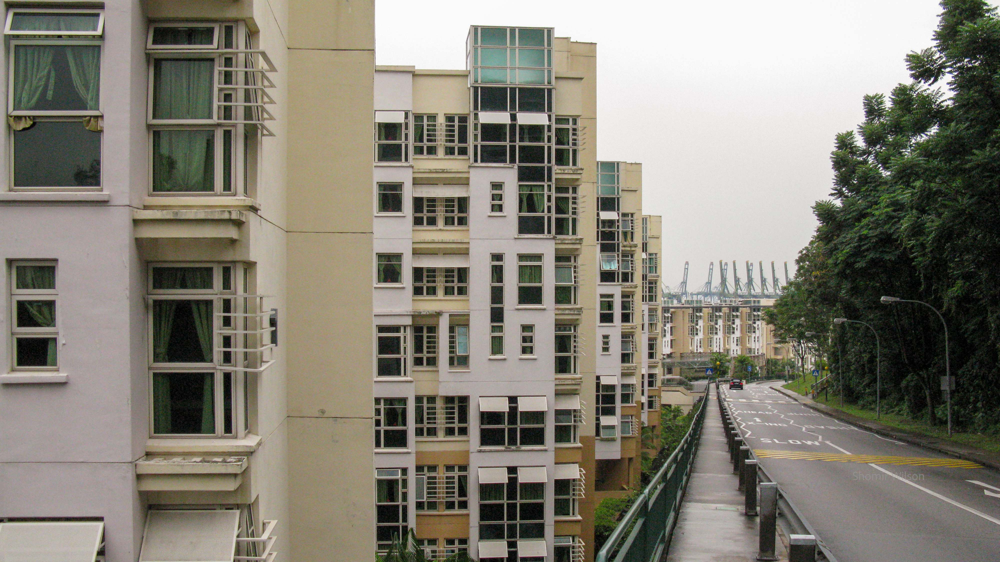
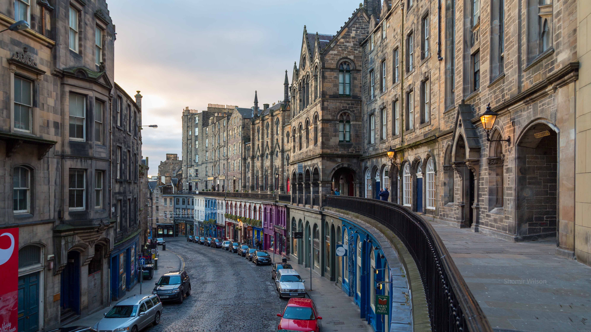
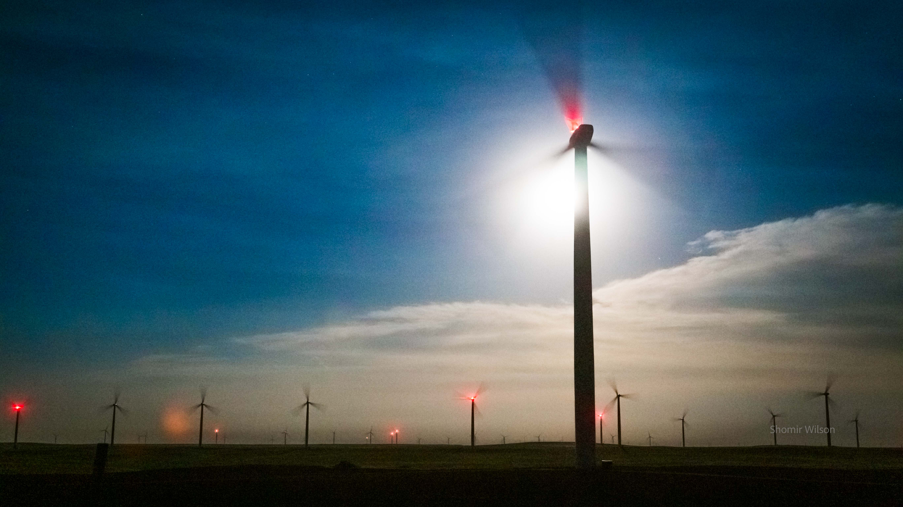
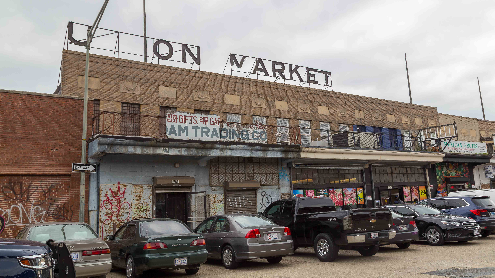

This page is part of Travel and Meaning and my advice pages.

June, 2009
Marsfield, Australia
The stars look very different today, I thought while walking from campus to my flat just after twilight. The sky had been overcast most days and nights since I arrived in Australia, but finally the stars had emerged. I searched for the Southern Cross, wanting to tell my family and friends back in the US that I had finally seen it. I was roughly a week into a ten-week stay in Australia, where I was a visiting researcher at Macquarie University, in a suburb outside Sydney. The Southern Cross eluded me, perhaps still hidden by a cloud, but many familiar constellations were missing.
I was in Australia as a National Science Foundation-funded visiting researcher, halfway through graduate school, and I had never been this far from everyone I knew. I evaluated the literal meaning of that claim: the eastern United States, which had always been my home, was nearly ten thousand miles away. The distance had felt palpable during the fourteen-hour transoceanic flight aboard a United Boeing 747-400. Fourteen hours over the vast and empty Pacific Ocean seemed, in a romantic way, like space travel. After all, one way of pointing at Australia from the US was to point into the ground; the planet was in the way. I compared my long walk in the dark to that plane over the Pacific, alone and navigating across a vast darkened space.
I was renting a room in a shared house a mile and half from campus. Buses were infrequent, and that evening I decided to walk. A few days earlier I had dragged my large, heavy suitcase with its failing wheels that distance, telling myself that I didn't need a cab but actually too timid to figure out how to get one. I stayed my first few days in Australia in a campus dorm room while searching for housing for the rest of the summer. I had discovered the lack of insulation or heating in typical Australian homes. Finding a space heater in my dorm room closet and, after I moved to the house, discovering a space heater on sale in a supermarket had been pivotal moments for my morale.
Earlier that week my first meeting with my host, a well-known professor, had been awkward. When he asked about my goals, I gave a flustered answer and felt embarrassed about it for the rest of the conversation. He didn't seem to notice, but I began doubting whether I had the knowledge and skills to complete the project I had proposed. Getting to Australia on an NSF fellowship was vindication for that travel fellowship I had been rejected for seven years ago, but the congratulatory stage of excitement had passed. Now I needed to do the work on the far side of winning.
Still, I was in Australia. The adventures abroad that I had been looking for seemed close at hand. I had arrived a week before the fellowship's official start, and other Americans participating in the same fellowship program would soon join me in the Sydney area. I looked forward to exploring Australia with them.

June 7, 2010
National University of Singapore, Kent Ridge Campus
If jet lag was a verb, I was jet lagging hard. I had just arrived for a ten-week visiting researcher stay at the National University of Singapore, similar to my ten weeks in Australia the previous year. I was surprised that NSF had given me a second award from the same program. The reviewers' scores weren't as stellar, but they were high enough. I had actually visited Singapore for a conference the previous year, on a side trip from Australia, and I had wanted to return. A few years prior, living abroad even once had seemed like a reach goal. This would be my second time.
My journey had begun six days ago, when I left my apartment in College Park to fly to Los Angeles, where I attended a conference for three days and presented a paper. On a fourth day in the Los Angeles area I went sightseeing on an elaborate improvised itinerary, covering points as far north as Hollywood and as far south as Long Beach. Late that evening I boarded a flight out of LAX to cross the Pacific Ocean. (I thought about the grand symbolism: many conference attendees boarded eastbound flights to go home. Instead I continued west, deeper into the night.) I connected through HKG, where I had a long enough layover to exit the airport and explore Central Hong Kong. I spent much of the time lost, but I made it to the top of Victoria Peak. Later that afternoon I caught my onward flight to SIN. During that flight, I began feeling the incredible fatigue that made that evening in Singapore difficult.
A student from my host's lab had picked me up at the airport and brought me to the NUS campus. I had a dorm room to stay in for a week, until my apartment for the rest of the summer opened up. I picked up my keys from the night attendant and walked to my room alone. It was spartanly furnished and it had neither plumbing nor air conditioning. I usually couldn't sleep in warm, humid air, but I couldn't recall ever feeling so tired before. One step after another—open suitcase, retrieve toiletries, walk down the hall, brush teeth, take shower—I worked toward bed. Once I lay down, I fell asleep quickly.
The next morning I set out for breakfast, not knowing where I would find it. The front desk pointed me to a hawker centre nearby. Most options there were closed—hawker centres, I would discover, aren't typically suited for breakfast—but I found an open Indian stall and bought a dosa. I thought about getting a few groceries and wondered how difficult it would be to get a local SIM card for my phone. The weather was overcast and humid, which didn't help with my jet lag. It was an anticlimactic first day, but I was in Singapore, and the appeal of that didn't escape me.

July 29, 2013
Edinburgh, Scotland
The weather was unappealing: it was a drizzly, gray morning. On approach to EDI our airliner took a sweeping counterclockwise turn around central Edinburgh, but most of the city's central landmarks were hidden by low clouds. To the north I saw Leith and the Firth of Forth. Even if the weather was appropriate for the British Isles, it wasn't one of the things I had imagined when I first thought about being on this flight, three years prior.
In April 2010, during the stateside orientation for the program that sent me to Singapore, an NSF program officer speaking onstage mentioned in passing something called "IRFP", the agency's "international postdoc program". I hadn't heard of it, and I looked it up immediately. I figured I had one year left in graduate school, so it made sense to apply soon. I made a note to investigate it further. The note was insurance against forgetting, but I was unlikely to forget. Even before leaving for ten weeks in Singapore I was thinking about IRFP as the next opportunity for an adventure abroad.
I had a general sense that I wanted to go to the United Kingdom, partly because I wanted to see more of Europe and partly because the University of Edinburgh was a mecca for my area of research. I knew many people who had gotten degrees there or had held visiting positions, and spending time there almost seemed like a pilgrimage. My host in Australia had received his PhD there, and a few weeks later in May 2010 I emailed him asking for suggestions on whom to contact there. He gave me one, and that fall when I wrote an application to spend a year in Scotland, I contacted him and he agreed I could name him as my potential host.
While I wrote the application, I thought about what it would be like to travel to Scotland. Idly, I searched for flights. Continental Airlines flew directly from Newark to Edinburgh overnight with a Boeing 757, and if I received the fellowship, it seemed likely I would be on that flight. I thought about the aircraft type and the route, and I predicted that many seats would be empty, opening up the rare possibility that I could lie down across a row and sleep. I looked at layovers and saw that I could choose a long one, allowing me to spend an afternoon in New York City. All this assumed the airline timetables wouldn't change by the time I received the fellowship—if I did.
My first application failed. I revised it and resubmitted it in Fall 2011.
My second application succeeded. I received notification in Spring 2012, not long after I discovered that there would not be another application cycle. I delayed starting the fellowship until Summer 2013.
By 2013 United Airlines had bought Continental Airlines, but nearly everything else happened as I had predicted three years before: the afternoon in NYC, the transatlantic route, the empty seats, and the space to lie down. I hadn't thought of the weather, but it seemed appropriately Scottish. I assumed the sun would come out eventually.

June 19, 2016
Northeast Colorado
I was driving on a dark, rural highway when, coming around a curve, it appeared that a truck with only one headlight—searingly bright—was heading straight at me. A half-second later the situation resolved itself: train tracks ran parallel to the road and unusually near to it, and the headlight was on a locomotive. We passed without incident. I wondered how many drivers had experienced the same jump-scare on this road. My long day was close to an end, and the only remaining tasks were to get to my hotel room in Greeley, take a shower, and sleep. Since waking up that morning, I had spent time on the ground in four time zones, two apiece on opposite sides of the Atlantic Ocean.
Three days ago I had set out from Pittsburgh, where I lived and worked as a postdoc, for a job interview at a university in the United Kingdom. It was a splendid opportunity in a city I knew well, but I walked away from the interview feeling uncertain whether I had impressed them. After the interview, I spent an extra day in the area to catch up with an old mentor and sightsee. About the Brexit vote, which would happen a few days later, he told me that if the verdict was yes I should not accept an offer there. I juxtaposed that with the deep affection I sensed he felt for his country.
My return from the United Kingdom was not to Pennsylvania, but to Colorado. I woke up in the United Kingdom and boarded a sequence of three flights that connected through Amsterdam and Minneapolis. In Amsterdam’s airport I bought Dutch licorice, which my wife and I enjoyed but couldn’t easily find in the US. In Minneapolis’ airport I called my parents to tell them about the interview. I had a window seat on the final flight, from Minneapolis to Denver, and I pondered the geography below. Flat green farmlands with many small lakes yielded to empty plains with white patches on hills, and I wondered if they were sand or exposed rock cliffs. In the sky, I watched with mild alarm as dark rays converged on the horizon, like a scene in a supernatural horror movie. Much later I would learn that I had witnessed an anticrepuscular sunset, an optical phenomenon that sometimes transpires opposite the actual sunset.
I was driving to Greeley, Colorado in a rental car that I picked up at the airport. I had just a few days between the interview in the United Kingdom and a conference in Denver, and it didn’t make sense to return home between them, so I would spend a couple days based in Greeley to sightsee. I planned to go hiking, take night sky pictures, and meet a friend from college. I would then attend the conference, and after that I still wouldn’t go home. I would fly next to Cincinnati, where I had an offer for a faculty position, for a second visit to further assess the department and the livability of the city. After that I would finally complete the circuit by returning to Pittsburgh.
I reflected on the fact that I had strung together four destinations into one trip, with flights sponsored by three different universities. I enjoyed the idea that I was traveling untethered from home, in the sense that on multiple legs of this trip neither my origin nor my destination was the place where I lived. It was freedom, and maybe a sensation that I controlled my fate. In comparison with how my PhD had ended and the difficulty of my academic job search to date—four years had produced very few offers—that control was appealing.

January 28, 2018
Arlington, Virginia
I didn’t want to be there, I thought as I looked through a taxi window at the Potomac River on a cold, gray evening. It was twilight on a Monday, and the rush hour traffic was moving in fits and spurts. Arlington was a familiar place: I had gone to graduate school in the DC area, and I still had friends there. Fifty miles to the south—a small distance compared to many others I had traveled—was Fredericksburg, where I grew up and where my parents still lived. Fatigue dragged on me, though, pulling down my mood. I had flown into the DC area to interview for a faculty position, and I wouldn’t meet anyone in the area I knew.
I was in year six of an academic job search that hadn’t ended when I accepted an offer for my first faculty position, in Cincinnati, at the end of year four. Soon after I arrived I knew it wasn’t the right fit for me, and I returned to the search. I had spreadsheets and procedures for efficiently applying to large numbers of academic jobs, but I wanted to be done. Shadowing my efforts was the awareness that, after all this effort, being a professor might not work out. Sixteen years ago, as an undergraduate, I had begun thinking about this career path. Through the rest of college, through a year of failed PhD applications, through a second round which yielded a few offers, through six years of graduate school, through five years of postdoc, and through two years in a position that didn’t feel stable, it was the future that I wanted most. When I submitted my first job application to transfer as faculty—from one university to another—I remembered a Latin phrase attributed to Julius Caesar upon crossing the Rubicon: alea iacta est, the die is cast. I was in year two of the gamble or year sixteen, depending on how you counted them.
I watched familiar landmarks pass by and remembered the French phrase jamais vu, for seeing something familiar but feeling like one had never seen it before. I was a guest in a familiar city, separated from the people and places I would normally visit. It was anonymous, placeless travel. I wanted better.
Continue to Part 4 or go to the Table of Contents.